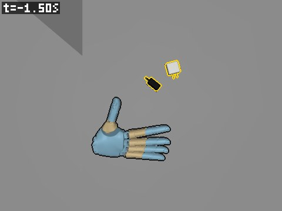

- Run 19 · started · 3.5 h of the 8 h budget
- stage: training
- 38 records · chain verified
- latest result: iteration r0038 · no result
- best full task: no task gate yet (skill and feasibility tests do not count)
- latest note (decision): Reference-family PPO budget: four independent privileged staged grasp families, white/black × body X/Y support face, each 512…
more
Reference-family PPO budget: four independent privileged staged grasp families, white/black × body X/Y support face, each 512 worlds,600updates maximum or7200wallseconds. Train holding first, then15/30/45/60degree reference-based turns after3fresh first-episode cohorts>=.85. At200updates without.85hold success stop and change geometry/reward; do not extend unchanged. One-slot-per-kind staged model removes inactive bookkeeping bodies only. Native CPU>=128seed outcome parity and full feasibility gate still required before retaining a teacher. Latest r0033 montages seed1195641526 at2.933s shows thumb-only/table-supported closure; seed262605026 approach does not acquire. Safe high prelift/orientation and reference distal thumb-middle geometry target that failure. GPU smoke0physicalviolations is not task proof.
Reconstruction v7 · reference check VALID
The agent's reconstruction of the demonstration next to the demonstration, the 3D viewer, component statuses, validation numbers and limitations.
r0014 · reconstruction v7 the agent's own claim, not an official evaluation
reference check (check_reference.py): VALID · errors 0 · warnings 0 · error_list –
Final stage-1 reference: format VALID and quality PASS; support-switch artifact corrected, hand contacts and penetration pass, continuity/sync pass, residual self-contact and monocular uncertainty explicit.
Components
| component | status | method | note |
|---|---|---|---|
| camera | partial | Geometric focal profile + MoGe prior; planar keyframed background fit | Weak focal/depth/normal calibration; explicitly propagated assumed systematic uncertainty (roughly 56–87 mm), 3.3 deg camera rotation. |
| objects_6d | partial | SAM 3 + known-geometry fitting + support constraints | Support transition corrected and trajectories smoothed: max steps 9.2/16.0 mm, no pre-lift jump; image IoU slightly lower for physical consistency. Hidden frames invalid. |
| hand_motion | partial | HaWoR + unchanged default MANO fit, then copied fitter with opposed contact and separation | 360 valid frames; continuity, anatomical contact and submillimetre signed penetration pass. Residual self-contact warning retained; exact numbers in validation report. |
| contact_phases | partial | Dense manual video review and 3D validation | White 76–211, black 251–386; boundaries uncertain by 2–4 frames; anatomical contact not yet resolved. |
| geometry_physics | partial | Blender bpy known-size analogue models, inferred nominal physics | Blender triangulated/welded watertight meshes; static support remains valid. Nominal physical properties inferred. |
| validation | ok | Provided validator and checker | Format VALID and supplied quality overall PASS. Own support/motion audit passes; physics, continuity and sync pass. Residual self-contact warning explicit. |
| comparison | ok | Provided render_compare and build_viewer | 436 synchronised frames at 30 Hz, three panels and 3D viewer. |
Validation numbers
| schema | recon-validation/1 |
|---|---|
| utc | 2026-11-17T21:54:33Z |
| thresholds | {"contact_band_mm":5.0,"phase_fail_mm":10.0,"pen_warn_mm":5.0,"pen_fail_mm":10.0,"wrist_speed_mps":3.0,"wrist_accel_mps2":150.0,"tip_speed_mps":5.0,"bone_jump_deg":60.0,"obj_jump_m":0.1,"obj_rot_jump_deg":45.0,"g":9.81,"g_tol":2.0,"rest_drift_mm":5.0,"sink_mm":3.0,"hand_chain_mm":[140.0,230.0],"iou_ |
| checks | {"reprojection":{"status":"pass","per_part":null,"below_threshold":null,"note":"against your own masks: agreement with them is necessary, not sufficient (3D errors along the viewing ray are invisible here)"},"fingertip_distance":{"status":"pass","phases":null},"anatomical_contact":{"status":"pass"," |
| summary | {"reprojection":"pass","fingertip_distance":"pass","anatomical_contact":"pass","penetration_hand_object":"pass","self_penetration":"warn","continuity":"pass","physics":"pass","handedness_scale":"pass","sync":"pass","camera_focal":"pass"} |
| failed | – |
| incomplete | – |
| missing_required | – |
| overall | pass |
| overall_note | pass |
Limitations
- Small residual finger self-contact warning; exact occluded motion and shared metric calibration remain uncertain/inferred.
- Object mass, COM, friction and detailed black-charger identity are analogue priors, not measurements.
Open the 3D hand–object viewer (the agent's reconstruction data; 4 files)
Rendered by the site's own viewer module from the data the agent uploaded; nothing is synthesised.
recorded 2026-11-17 16:57 EST · version v7 · producer r2s2r-d2s recon
Earlier versions (6)
r0013 · v6
Support-corrected, smoothed object motion and refitted hands: format VALID, quality PASS, own support/motion audit passes; submillimetre penetration and explicit residual finger warnings.
r0012 · v5
Local hand refit passes signed penetration (.68/1.61 mm) and reduces finger intersections to 1.4%; stronger own audit identifies object support-transition failure for next correction.
r0009 · v4
First reconstruction with overall quality PASS and format VALID: full-vertex fitting reduces finger intersections to 2.8%; opposed grasps reconstructed; residual warnings explicit.
r0008 · v3
Collision-prior refinement reduces finger intersections to 23.1% and recovers image agreement; anatomical contact passes; remaining full-mesh penetration explicit.
r0007 · v2
Watertight mesh and opposed-contact hand refinement: anatomical contact now passes; residual penetration and self-intersection remain explicit failures.
r0006 · v1
First complete format-VALID reconstruction: shared metric scene, both chargers and right MANO hand; quality failures explicitly preserved for refinement.
Criteria v1
The agent's own verification criteria, with the reason for each revision.
r0015 · criteria v1
- 7733 characters of criteria text
Criteria text
Own simulation verification criteria — version 1
These are my criteria for this experiment, not official success criteria or evidence of real-robot success. They apply to the complete deployment distribution in TASK.md/TASK_CONFIG.md: two or three plugs, any mix of both kinds, arbitrary heading, observation-row order changes, and starts that may touch or lean. No heading is excluded to help the controller.
Evidence is the 436-frame demonstration, the recorded reconstruction and its analysis/reference_quantities.json. Frame boundaries have approximately 2–4-frame uncertainty. The support-corrected reconstruction estimates transfers of 0.220/0.225 m, 90° initial-to-final blade-axis changes, centre rises of 0.027/0.091 m, and final visible rest of about 7.4/1.6 s. During white frames 110–145 and black 313–334, blade-axis turns relative to the fitted wrist are about 64°/58°, wrist changes about 30°/32°, and MANO45 configuration changes about 1.14/1.66 rad. These are estimates conditional on monocular/physical priors. Exact occluded rotations, forces and slip are not directly observed. Full-quaternion angles can include unresolved axial half-turn choices; blade-axis angles are used for the skill claim.
For each object the ordered plan is acquire/lift → active finger turn → carry/lower/release. This order is checked per object. The hand may recover from a failed attempt within 60 s, but the final successful handling must satisfy every skill condition. One plug is transported at a time; incidental contacts while separating touching plugs are allowed, carrying two together is not.
Ordered stages
- acquire: every object has a continuous opposed free hold of at least 0.30 s, with thumb and at least one other finger touching it, no table/fixed-support or other-object contact in that hold, and centre rise at least 0.015 m above its episode start. The video shows multi-second grasp/lift phases; 0.30 s rejects a contact impulse while allowing changed execution speed. The rise is below the estimated white rise but requires a distinct pickup. Free hold prevents a table pivot from qualifying as a lift. Standard predicates, for each object: held_s >= 0.30, opposed_s >= 0.30, max_rise_m >= 0.015.
- reorient: within one opposed free hold, the object's blade axis turns at least 45° relative to the palm. Compute u(t)=R_palm(t)^T R_object(t)[0,0,1] and the largest angular separation in that hold. Also require standard opposed_rel_rotation_deg >= 45 and passive_rel_rotation_deg <= 15. At least 75% of the relative blade-axis turning must occur while the joints of the contacting thumb/other-finger chains are moving (joint-speed norm >= 0.30 rad/s over 0.10 s windows); movement of unrelated fingers cannot count. The thresholds require fingers to supply a substantial part of the 90° side-to-up turn: measured relative-axis turns are about 64°/58°, while the 45° lower bound allows reconstruction/grasp adaptation uncertainty. The passive limit and 75% active fraction are explicit conservative physical assumptions to reject a static grip that slips/pivots. No attachment/weld or artificial object force is allowed. Opposed wrist rotation in this handling interval must be <=70° (observed about30–32°, with margin for adaptation); wrist turning alone cannot satisfy the relative-axis condition.
- transfer: each qualified object is carried from its initial right-side location to the goal zone, lowered onto its base and released, in any object order. The wrist must retain the demonstrated style through acquisition, turn, carry and lowering: compare the palm to the recorded wrist reference after anatomical hand-to-palm conversion and start/goal adaptation. Require median orientation error <=30° and 95th percentile <=45°, and median relative palm–object position error <=0.040 m and 95th percentile <=0.070 m. The anatomical transform aligns robot +Z with the human finger direction and robot +X with the palm-side normal; its constant translation comes from the different hand geometry. Adapt approach heading by yaw, with the equivalent opposite-side grasp where needed, while keeping the top-approach palm style; interpolate the carry toward a reachable goal pose. Freeze the transform, adaptation code and phase alignment in the simulation/evaluator before any policy is judged. Compare by monotone object/contact progress, not a candidate's clock. Angular margins cover the approximately8° gravity ambiguity, hand-fit and morphological/IK differences; position margins are about one body width and allow the robot's different finger reach. They do not waive active finger turning. If public IK makes the reference family impossible, record the calculation and revise the criteria with the physical reason before evaluation.
- settled: every plug satisfies TASK_CONFIG.md's placed rule throughout the final0.5 s of the full60 s episode: body-centre x in[0.28,0.48], y in[-0.10,0.05] m; +Z within10° of world up; body centre within0.010 m of table_z + half its kind's body length; linear speed <0.020 m/s and angular speed <0.50 rad/s; no hand contact. Every plug remains on the table and the right region is clear. The hand has withdrawn; a plug knocked over later fails. Standard predicates for each object: final_x_m>=0.28 and<=0.48, final_y_m>=-0.10 and<=0.05, final_axis_angle_deg<=10 (object_axis[0,0,1], world_axis[0,0,1]), touching_hand_at_end<=0, touching_environment_at_end>=1, rest_at_end_s>=0.5. The evaluator additionally checks the exact per-kind height, velocities and complete final window. The standard rest measure is stricter than the deployment speeds and is intentionally retained.
The suite reports cumulative stage flags in this order, with per-object temporal ordering checked by the evaluator. It never marks a final-state-only episode successful when an earlier skill stage failed.
Whole-episode requirements and pass rate
An episode succeeds only if all stages pass, the public arm/hand/controller limits hold, no canonical stop occurs (including during the1.5 s start ramp), and the complete contract-v3 episode runs for60 s unless stopped. Finger torque caps and realistic frictional contacts are enforced by the simulation. Report maximum penetration; more than3 mm in a robot/object or nonadjacent finger contact fails the physical-validity check (an explicit allowance for glove/contact softness and solver tolerance, not permission for geometric grasping through a body).
Task mastery requires success >=0.80 on fresh gate episodes and zero episodes with hardware violations, plus the final10 ms p99 CPU inference check. This is the required minimum mastery rate and my declared pass threshold; it is not a claim of universal success. Use at least32 dev episodes per gate and at least64 final episodes, report95% Wilson intervals, per-stage funnel, stops and representative successes/failures. The task feasibility suite uses identical starts, evaluator, stages and predicates, with pass rate0.25; its controller may be privileged and is reported separately. Improve the teacher toward0.90 before distillation.
Evaluation must reproduce the default pose sensor from true states and mesh-based visibility with the public sensor function; the network receives only contract-v3 keys/history. Object row count is exactly the real count, and kinds/order vary. The frozen sampler covers uniform headings and the full prescribed position range, both counts and all kind mixtures, including stable touching/leaning configurations. Physical randomization, geometry sources, reach checks and residual simulator approximations are declared in the simulation record. No robot result or transfer guarantee is inferred from simulation alone.
Simulation · 2 versions
The training simulation as recorded by the agent, per version.
r0037 · simulation v2

Changes in this version
- Reason
- GPU contact-wrench and per-finger extraction now matches CPU convention; track robot penetration at every physics substep instead of only logging endpoints. Physical geometry, masses, controller gains and default…
more
GPU contact-wrench and per-finger extraction now matches CPU convention; track robot penetration at every physics substep instead of only logging endpoints. Physical geometry, masses, controller gains and default contact model unchanged.
Recorded fields
- Reconstruction version
- 7
- Simulator
- name
- MuJoCo
- version
- 3.17.0
- backend
- CPU MuJoCo float64 1/1500s evaluator; exploratory GPU mujoco_warp3.17 float32 dt.002 teacher curriculum.
- dt_s
- 0.000666667
- integrator
- implicitfast
- solver
- Newton,100iterations,50line search,tolerance1e-6,elliptic cone,multiccd
- Reference
- record
- r0014
- method
- Anatomical MANO wrist to Wuji palm: +Z finger,+X palm normal, origin2cm behind human wrist. Fixed templates and monotone object-progress matcher in assets/reference_mapping.json. Teacher finger motion designed…
more
Anatomical MANO wrist to Wuji palm: +Z finger,+X palm normal, origin2cm behind human wrist. Fixed templates and monotone object-progress matcher in assets/reference_mapping.json. Teacher finger motion designed independently, no human finger retarget. - kinematic_replay
- Full436frames with translation[.12,-.215,-.003], objects follow reconstructed trajectories, wrist through public IK and open robot fingers. Explicit failed diagnostic:28.76mm max hand/object…
more
Full436frames with translation[.12,-.215,-.003], objects follow reconstructed trajectories, wrist through public IK and open robot fingers. Explicit failed diagnostic:28.76mm max hand/object penetration,51frames>3mm,IKp95position57.76mm,rotation31.7deg. Do not execute or use as physical success. Grasp/morphology/reach corrections still needed. - new_teacher_initialization
- Four kind/side-face families in sim/assets/family_*.npz, geometrically fitted to the anatomical reference with unused fingers hyperextended within deployed limits. White distal body centre localZ.115/.122m;…
more
Four kind/side-face families in sim/assets/family_*.npz, geometrically fitted to the anatomical reference with unused fingers hyperextended within deployed limits. White distal body centre localZ.115/.122m; black.107/.111m. Initial pose geometry is not a physical grasp or task-feasibility proof. Black initial wrist down35degrees for robot clearance, core/goaldown15degrees; yaw+10degrees for one family, inside declared angular tolerance but fullstylemust be evaluated.
- Initial conditions
- robot_start
- Exact rightresetFKandhandhome package start, so1.5sramp stationary, clearofobjects/camera. sim/start_pose.json
- sampler
- start_sampler.py usesboth2/3 counts,equal kindprobabilities,uniformheadings[-pi,pi],bothsignsX/Ysidefaces,fullstartx/y,40%touchproposalwith37.5%oftheselean. Nativephysical2sobjectonlypresettlement; rejects only…
more
start_sampler.py usesboth2/3 counts,equal kindprobabilities,uniformheadings[-pi,pi],bothsignsX/Ysidefaces,fullstartx/y,40%touchproposalwith37.5%oftheselean. Nativephysical2sobjectonlypresettlement; rejects only unsupported/nonresting/outofregion. Same codefortraining/eval. Nominal64seedproposalcounts36free14touch14lean; actualsettledlean angle distribution will be audited. - randomization
- Objectmass perkind U[.8,1.2]nominal andCOMeachaxisU[-2,2]mm compiledbeforephysics, slidingfrictioneachslot×U[.6,1.2]. Abovehand/arm/tableDR. Shapeuncertainty not yet randomized: limitation.
- Episode
- seconds
- 60
- policy_hz
- 30
- controller_hz
- 100
- ramp_s
- 1.5
- termination
- Only canonical stops,includingramp. Full60sotherwise. No success termination. Exactf64observations/actions/timeslogged.
- Validation
- home_fk_position_m
- 0.285812, -0.259626, -0.174221
- home_fk_quat_wxyz
- 0.671631, 0.149954, 0.691627, 0.219265
- home_position_check_error_m
- 3.56343e-05
- cpu_numba_torch_gpu_ik_max_joint_error_rad
- 1.33227e-15
- cpu_numba_torch_fk_max_matrix_error
- 4.44089e-16
- start_reach
JSON (5 keys)
{"grid_points":81,"within_10mm_3deg":81,"max_position_error_m":1.7554167342883506e-16,"max_orientation_error_deg":0.0,"min_arm_table_clearance_m":0.038745039521672464}- goal_reach
JSON (5 keys)
{"grid_points":81,"within_10mm_3deg":81,"max_position_error_m":6.251623253089657e-07,"max_orientation_error_deg":0.0001637109575269694,"min_arm_table_clearance_m":0.03874499169043327}- finger_response
JSON (7 keys)
{"index":"middle_pip","step_rad":0.2,"rise_threshold_times_s":{"0.1":0.03,"0.5":0.08,"0.9":0.21},"expected_first_order_2hz_25ms_times_s":{"0.1":0.03338432343682705,"0.5":0.0801589000381629,"0.9":0.20823389971985692},"steady_state_rad":0.2011682540178299,"stop":0,"notes":"Full filter/delay/saturated response-matched vendor PD30x and kvsqrt30, scale0.5 current caps. Test joint free of object contact."}- raw_reference_replay
JSON (9 keys)
{"frames":436,"kinematic_only":true,"fingers":"Open home posture, no retargeting of human finger joint motion. Diagnostic before physically valid teacher.","global_demo_to_robot_translation_m":[0.12,-0.215,-0.003],"max_hand_object_penetration_m":0.028760715630068642,"frames_over3mm":51,"ik_position_p95_m":0.05776268895715475,"ik_rotation_p95_deg":31.707007688611167,"limitations":"Raw anatomical replay is not executable: conservative arm/table collision and morphology adaptation still required. It does not prove task feasibility."}- starts
JSON (4 keys)
{"episodes":64,"passed":64,"stops":0,"test":"public d2s_measures.start_check environment, plus default response/geometry randomization"}- contract_hold
JSON (5 keys)
{"episode_s":60,"policy_steps":1800,"sensor_replay_errors":(empty),"action_replay_max_abs_diff":0.0,"replay_p99_ms":0.181}
- Limitations
list (6 items)
No realrobotverification ortransferguarantee., Arm reduced compliance/inertia/columnbarrier approximations; useconservativecapsulestops., Rawretargetreplayfails; itis reference diagnosis, notfeasibility., Glovetorsionalpatch,objectmass/inertia/COM/frictionarepriors., GPU/CPUphysicsparitynotyetestablished; CPUevaluatordefinesownsimulationclaim., Reference audit r0030 incorrectly generalized the white grasp; r0031 corrects it with measured per-kind headings. Preserve per-kind wrist families.- Media
- initial
- sim/reference_replay/initial.png
- replay
- sim/reference_replay25/compare25.mp4
- encoding
- 25fps with explicit demonstration-time resampling;14.52s,correcting original comparison encoding
- arm
- controller
- 100Hz raw jump>.1m/.5rad,20mm/.075rad speed clamp,public workspace clamp;8weightedDLS iterations,position1 rotation.2,lambda.01,homepull.02,periterationjointstep.2,5degree deployed margins,bestiterate
- column_barrier
- Own conservative soft cylinder barrier radius.095 pluscaps and.01margin, three samples perlink,nullspacegain5 clipped.1rad. Approximation to station column capsule barrier.
- response
- Published perjoint delay100-140ms plus lag0-40ms; delay jitter±15ms,lagscaleU[.8,1.25]. Published K,D reduced to Cartesian compliance,cap2e4N/m500Nm/rad,diagonaldamping0.1s. Contact displacement mapped to…
more
Published perjoint delay100-140ms plus lag0-40ms; delay jitter±15ms,lagscaleU[.8,1.25]. Published K,D reduced to Cartesian compliance,cap2e4N/m500Nm/rad,diagonaldamping0.1s. Contact displacement mapped to jointdeflection then FK-corrected measured joints. No physical arm-link inertia; conservativecapsule collision stop with table/allactiveobjects and parkedleftarm/hand. - torque
- CPU actual hand external contact wrench including torsion, mapped JtransposeW,30mslowpass,20Nmhalt. Arm contact ends at collision stop. Approximation and numerical filtering disclosed.
- hand
- controller
- 2Hz lowpass range1.5–2.5,delay20–35ms,PDvendor kp×30 kv×sqrt30,effortcapgripU[.25,1]×vendor. Published deployed limits; noise.1degree. No actionclipping beyondlimits; hardware_violation reported.
- contact
- Unmeasured glove slidingfrictionU[.6,1.2], soft-finger condim4 torsionalpatchdiameterU[1,5]mm baseline3mm. No adhesion or rollinglock; object/tablecondim3. Based on MuJoCo primary contact-model documentation…
more
Unmeasured glove slidingfrictionU[.6,1.2], soft-finger condim4 torsionalpatchdiameterU[1,5]mm baseline3mm. No adhesion or rollinglock; object/tablecondim3. Based on MuJoCo primary contact-model documentation https://mujoco.readthedocs.io/en/stable/computation/index.html#condim; physical patch/friction unmeasured, must sensitivity-test. Robot/object or nonadjacentfingerpenetration>3mm fails own criteria.
- sensor
- implementation
- Unchanged public d2s_sensor.PoseSensor default SensorParams perrealobject, seeded fromstdin. Reset atfirstnegative-time row,updatedatalllogrows. Exact policy events k/30;100Hzcontroller and1500Hzphysics. Measuredproprio…
more
Unchanged public d2s_sensor.PoseSensor default SensorParams perrealobject, seeded fromstdin. Reset atfirstnegative-time row,updatedatalllogrows. Exact policy events k/30;100Hzcontroller and1500Hzphysics. Measuredproprio delayed lognormal13.9msmedian21.1msp95,FKmatchesarm_q. - visibility
- public visible_fraction,128areaweighted points/normals fromfullrecorded mesh, ego camera, conservative percollisiongeom handcapsules,7armcapsules andotherobjectcapsules. No all-visible override. Proxy sensor insideGPU…
more
public visible_fraction,128areaweighted points/normals fromfullrecorded mesh, ego camera, conservative percollisiongeom handcapsules,7armcapsules andotherobjectcapsules. No all-visible override. Proxy sensor insideGPU fork unused by CPU policy.
- gpu_validation
- hold
- 8worlds120policy steps, no stops or overflow
- static
- Provided d2s_parity options/arrays identical; WARN on box-box pairs involving fixed blades/table.
- states
- 128sampledcontact states:0% contact-count mismatches,normalp95.002deg for mesh-mesh,peak27contacts/90constraints vs192/768 buffers. qacc warnings on inactive parked objects,active dummyblackp95.0723.
- outcomes
- Staged zero-hand-delta16-seedpilot:CPU0/16success,0hardware,0drops;GPU1/16success,0hardware,0drops. Not≥128 and not fulltask: insufficient for relied-on GPU policy claims. Require128-seed trained-checkpoint outcome…
more
Staged zero-hand-delta16-seedpilot:CPU0/16success,0hardware,0drops;GPU1/16success,0hardware,0drops. Not≥128 and not fulltask: insufficient for relied-on GPU policy claims. Require128-seed trained-checkpoint outcome parity and nativeCPU task gate before retaining teacher. - source
- training/primitive/parity_static.json,parity_states_report.json,parity_zero_cpu16.json,parity_zero_gpu16.json
- penetration_measurement
- Record accumulated robot-involving maximum at all CPU/GPU physics substeps. Threshold3mm unchanged. Inactive object/floor bookkeeping contacts excluded; all robot/object,hand/table and nonadjacentfinger contacts…
more
Record accumulated robot-involving maximum at all CPU/GPU physics substeps. Threshold3mm unchanged. Inactive object/floor bookkeeping contacts excluded; all robot/object,hand/table and nonadjacentfinger contacts included. - training_optimization
- Staged-only model may use one slot per object kind (nv38) rather than three (nv62); removes disconnected inactive parked bodies, preserves actual two objects and full robot, not deployment start distribution.
r0020 · simulation v1

Changes in this version
First simulation version.
Recorded fields
- Reconstruction version
- 7
- Simulator
- name
- MuJoCo
- version
- 3.17.0
- backend
- native CPU float64 physics; workspace fork of optional GPU free-palm reference controller. GPU training not yet authorized by parity evidence.
- dt_s
- 0.000666667
- integrator
- implicitfast
- solver
- Newton,100iterations,50line search,tolerance1e-6,elliptic cone,multiccd
- Reference
- record
- r0014
- method
- Anatomical MANO wrist to Wuji palm: +Z finger,+X palm normal, origin2cm behind human wrist. Fixed templates and monotone object-progress matcher in assets/reference_mapping.json. Teacher finger motion designed…
more
Anatomical MANO wrist to Wuji palm: +Z finger,+X palm normal, origin2cm behind human wrist. Fixed templates and monotone object-progress matcher in assets/reference_mapping.json. Teacher finger motion designed independently, no human finger retarget. - kinematic_replay
- Full436frames with translation[.12,-.215,-.003], objects follow reconstructed trajectories, wrist through public IK and open robot fingers. Explicit failed diagnostic:28.76mm max hand/object…
more
Full436frames with translation[.12,-.215,-.003], objects follow reconstructed trajectories, wrist through public IK and open robot fingers. Explicit failed diagnostic:28.76mm max hand/object penetration,51frames>3mm,IKp95position57.76mm,rotation31.7deg. Do not execute or use as physical success. Grasp/morphology/reach corrections still needed.
- Initial conditions
- robot_start
- Exact rightresetFKandhandhome package start, so1.5sramp stationary, clearofobjects/camera. sim/start_pose.json
- sampler
- start_sampler.py usesboth2/3 counts,equal kindprobabilities,uniformheadings[-pi,pi],bothsignsX/Ysidefaces,fullstartx/y,40%touchproposalwith37.5%oftheselean. Nativephysical2sobjectonlypresettlement; rejects only…
more
start_sampler.py usesboth2/3 counts,equal kindprobabilities,uniformheadings[-pi,pi],bothsignsX/Ysidefaces,fullstartx/y,40%touchproposalwith37.5%oftheselean. Nativephysical2sobjectonlypresettlement; rejects only unsupported/nonresting/outofregion. Same codefortraining/eval. Nominal64seedproposalcounts36free14touch14lean; actualsettledlean angle distribution will be audited. - randomization
- Objectmass perkind U[.8,1.2]nominal andCOMeachaxisU[-2,2]mm compiledbeforephysics, slidingfrictioneachslot×U[.6,1.2]. Abovehand/arm/tableDR. Shapeuncertainty not yet randomized: limitation.
- Episode
- seconds
- 60
- policy_hz
- 30
- controller_hz
- 100
- ramp_s
- 1.5
- termination
- Only canonical stops,includingramp. Full60sotherwise. No success termination. Exactf64observations/actions/timeslogged.
- Validation
- home_fk_position_m
- 0.285812, -0.259626, -0.174221
- home_fk_quat_wxyz
- 0.671631, 0.149954, 0.691627, 0.219265
- home_position_check_error_m
- 3.56343e-05
- cpu_numba_torch_gpu_ik_max_joint_error_rad
- 1.33227e-15
- cpu_numba_torch_fk_max_matrix_error
- 4.44089e-16
- start_reach
JSON (5 keys)
{"grid_points":81,"within_10mm_3deg":81,"max_position_error_m":1.7554167342883506e-16,"max_orientation_error_deg":0.0,"min_arm_table_clearance_m":0.038745039521672464}- goal_reach
JSON (5 keys)
{"grid_points":81,"within_10mm_3deg":81,"max_position_error_m":6.251623253089657e-07,"max_orientation_error_deg":0.0001637109575269694,"min_arm_table_clearance_m":0.03874499169043327}- finger_response
JSON (7 keys)
{"index":"middle_pip","step_rad":0.2,"rise_threshold_times_s":{"0.1":0.03,"0.5":0.08,"0.9":0.21},"expected_first_order_2hz_25ms_times_s":{"0.1":0.03338432343682705,"0.5":0.0801589000381629,"0.9":0.20823389971985692},"steady_state_rad":0.2011682540178299,"stop":0,"notes":"Full filter/delay/saturated response-matched vendor PD30x and kvsqrt30, scale0.5 current caps. Test joint free of object contact."}- raw_reference_replay
JSON (9 keys)
{"frames":436,"kinematic_only":true,"fingers":"Open home posture, no retargeting of human finger joint motion. Diagnostic before physically valid teacher.","global_demo_to_robot_translation_m":[0.12,-0.215,-0.003],"max_hand_object_penetration_m":0.028760715630068642,"frames_over3mm":51,"ik_position_p95_m":0.05776268895715475,"ik_rotation_p95_deg":31.707007688611167,"limitations":"Raw anatomical replay is not executable: conservative arm/table collision and morphology adaptation still required. It does not prove task feasibility."}- starts
JSON (4 keys)
{"episodes":64,"passed":64,"stops":0,"test":"public d2s_measures.start_check environment, plus default response/geometry randomization"}- contract_hold
JSON (5 keys)
{"episode_s":60,"policy_steps":1800,"sensor_replay_errors":(empty),"action_replay_max_abs_diff":0.0,"replay_p99_ms":0.181}
- Limitations
list (5 items)
No realrobotverification ortransferguarantee., Arm reduced compliance/inertia/columnbarrier approximations; useconservativecapsulestops., Rawretargetreplayfails; itis reference diagnosis, notfeasibility., Glovetorsionalpatch,objectmass/inertia/COM/frictionarepriors., GPU/CPUphysicsparitynotyetestablished; CPUevaluatordefinesownsimulationclaim.- Media
- initial
- sim/reference_replay/initial.png
- replay
- sim/reference_replay/compare.mp4
- arm
- controller
- 100Hz raw jump>.1m/.5rad,20mm/.075rad speed clamp,public workspace clamp;8weightedDLS iterations,position1 rotation.2,lambda.01,homepull.02,periterationjointstep.2,5degree deployed margins,bestiterate
- column_barrier
- Own conservative soft cylinder barrier radius.095 pluscaps and.01margin, three samples perlink,nullspacegain5 clipped.1rad. Approximation to station column capsule barrier.
- response
- Published perjoint delay100-140ms plus lag0-40ms; delay jitter±15ms,lagscaleU[.8,1.25]. Published K,D reduced to Cartesian compliance,cap2e4N/m500Nm/rad,diagonaldamping0.1s. Contact displacement mapped to…
more
Published perjoint delay100-140ms plus lag0-40ms; delay jitter±15ms,lagscaleU[.8,1.25]. Published K,D reduced to Cartesian compliance,cap2e4N/m500Nm/rad,diagonaldamping0.1s. Contact displacement mapped to jointdeflection then FK-corrected measured joints. No physical arm-link inertia; conservativecapsule collision stop with table/allactiveobjects and parkedleftarm/hand. - torque
- CPU actual hand external contact wrench including torsion, mapped JtransposeW,30mslowpass,20Nmhalt. Arm contact ends at collision stop. Approximation and numerical filtering disclosed.
- hand
- controller
- 2Hz lowpass range1.5–2.5,delay20–35ms,PDvendor kp×30 kv×sqrt30,effortcapgripU[.25,1]×vendor. Published deployed limits; noise.1degree. No actionclipping beyondlimits; hardware_violation reported.
- contact
- Unmeasured glove slidingfrictionU[.6,1.2], soft-finger condim4 torsionalpatchdiameterU[1,5]mm baseline3mm. No adhesion or rollinglock; object/tablecondim3. Based on MuJoCo primary contact-model documentation…
more
Unmeasured glove slidingfrictionU[.6,1.2], soft-finger condim4 torsionalpatchdiameterU[1,5]mm baseline3mm. No adhesion or rollinglock; object/tablecondim3. Based on MuJoCo primary contact-model documentation https://mujoco.readthedocs.io/en/stable/computation/index.html#condim; physical patch/friction unmeasured, must sensitivity-test. Robot/object or nonadjacentfingerpenetration>3mm fails own criteria.
- sensor
- implementation
- Unchanged public d2s_sensor.PoseSensor default SensorParams perrealobject, seeded fromstdin. Reset atfirstnegative-time row,updatedatalllogrows. Exact policy events k/30;100Hzcontroller and1500Hzphysics. Measuredproprio…
more
Unchanged public d2s_sensor.PoseSensor default SensorParams perrealobject, seeded fromstdin. Reset atfirstnegative-time row,updatedatalllogrows. Exact policy events k/30;100Hzcontroller and1500Hzphysics. Measuredproprio delayed lognormal13.9msmedian21.1msp95,FKmatchesarm_q. - visibility
- public visible_fraction,128areaweighted points/normals fromfullrecorded mesh, ego camera, conservative percollisiongeom handcapsules,7armcapsules andotherobjectcapsules. No all-visible override. Proxy sensor insideGPU…
more
public visible_fraction,128areaweighted points/normals fromfullrecorded mesh, ego camera, conservative percollisiongeom handcapsules,7armcapsules andotherobjectcapsules. No all-visible override. Proxy sensor insideGPU fork unused by CPU policy.
Iterations · 3
Each evaluated training iteration; the latest is expanded.
Policy with privileged information (3) · the policy observes more than proprioception and object states (for example a teacher)
r0038sim v1privileged informationno result4.5s opposedhold,noHW,pos5.05mm but quaternion12.72deg exceeds10.3deg staged tolerance. OriginalMCPgrasp misma
iteration v3 · the agent's own claim, not an official evaluation
Training curves
Reward terms
| formula | term |
|---|---|
| 2exp(-(distance/.025)^2) | position |
| 4/(1+3*quaternion_angle^2) | orientation |
| 2*opposed+.25*thumb+.25*otherfinger | opposed |
| -.03mean(action^2)-.03mean((effort/cap)^2)-50clip((pen-.003)/.01,0,5)-20*(stop|hardware) | costs |
Domain randomization
| name | distribution | range |
|---|---|---|
| grip_scale | uniform | 0.25, 1 |
| hand_delay_s | uniform | 0.02, 0.035 |
| hand_lowpass_hz | uniform | 1.5, 2.5 |
| arm_delay_jitter_s | uniform additive | -0.015, 0.015 |
| arm_lag_scale | uniform | 0.8, 1.25 |
| hand_sliding_friction | uniform | 0.6, 1.2 |
| hand_torsion_patch_diameter_m | uniform | 0.001, 0.005 |
| object_sliding_friction_scale | uniform | 0.6, 1.2 |
| object_mass_scale | uniform perkind | 0.8, 1.2 |
| object_COM_each_axis_m | uniform | -0.002, 0.002 |
| table_extent | uniform | xlo.10–.19,xhi.99–1,yhalf.69–.80 |
Curriculum
4.5s staged airborne grasp;level0hold then15/30/45/60deg after3freshcohorts>=.85;never advanced before interruption
Algorithm
Privileged PPO exploratory staged in-hand curriculum; interrupted and not retained
Policy and training
- Architecture
- Actor and privileged critic MLP256/256/128,94features,20bounded hand target deltas .04rad.1024parallel worldsCUDA1.
- Observations
- Privileged true object pose/velocity, contacts,q/qvel,previous targets,goal orientation,actual palm error. NOTdeployable.
- Checkpoint
- training/primitive/run1/teacher.pt
Evaluation vs the agent's criteria
episodes – · successes – · success rate –
- scope
- Staged CPU seed880001 fromairborne grasp,notdeployment or task criteria
- result
- scope
- staged primitive curriculum, not deployment start or task feasibility
- seed
- 880001
- steps
- 135
- level
- 0
- success
- no
- hardware_violation
- no
- physical
JSON (7 keys)
{"distance":0.00505089620128274,"rotation_error_deg":12.72213077545166,"opposed_share":1.0,"mean_hold_s":4.499997138977051,"angle_deg":12.471851348876953,"level":0.0,"buffer_overflow":false}
- gate
- none;notretained
Compute
- environments
- 1024
- updates_logged
- 43
- environment_steps
- 1409024
- wall_s
- 738.587
- GPU_hours
- 0.205163
Reflection
4.5s opposedhold,noHW,pos5.05mm but quaternion12.72deg exceeds10.3deg staged tolerance. OriginalMCPgrasp mismatches distalreference and wrists. r0030 overgeneralized both plug orientations, corrected r0031. Current… more
Other recorded fields (3)
- pipeline_stage
- teacher
- reference
- r0014 wrist/finger-active skill; own teacher finger motion designed from Wuji geometry, not human finger retargeting.
- dataset
- successful_full_task_episodes
- 0
- generated
- no
r0034sim v1privileged informationno resultUnusedpositiveMCPcurlbendsfingersdown: exactmeshclearance−27.2mm at proposedgraspheight. CEMalsoextendsmiddleP
iteration v2 · the agent's own claim, not an official evaluation
Training curves
Reward terms
none recorded
Domain randomization
| name | distribution | range |
|---|---|---|
| grip_scale | uniform | 0.25, 1 |
| hand_delay_s | uniform | 0.02, 0.035 |
| hand_lowpass_hz | uniform | 1.5, 2.5 |
| arm_delay_jitter_s | uniform additive | -0.015, 0.015 |
| arm_lag_scale | uniform | 0.8, 1.25 |
| hand_sliding_friction | uniform | 0.6, 1.2 |
| hand_torsion_patch_diameter_m | uniform | 0.001, 0.005 |
| object_sliding_friction_scale | uniform | 0.6, 1.2 |
| object_mass_scale | uniform perkind | 0.8, 1.2 |
| object_COM_each_axis_m | uniform | -0.002, 0.002 |
| table_extent | uniform | xlo.10–.19,xhi.99–1,yhalf.69–.80 |
Curriculum
`None`; isolated physical grasp design precedes full start baseline.
Algorithm
Rejected exploratory teacher:20-target tripod CEM with2Hzfilter,closest-homeyaw,measured-wristalignmentwait andunused-fingercurling.
Policy and training
- Architecture
- Procedural privileged baseline, no neural network yet. Final student will be one network after verified data and BC.
- Observations
- Teacher may access actual object pose, kind, actual per-finger contacts, object/table contact and placement. Every physical action still goes through the frozen contract controller and hardware stops.
- Checkpoint
- teachers/v2_draft, rejected; retainv1baselineincumbent
Evaluation vs the agent's criteria
episodes 1 · successes – · success rate –
- scope
- ownseed101smoke,stopped2.09s
- success
- 0
- stages
- acquire
- 0
- reorient
- 0
- transfer
- 0
- settled
- 0
- stop
- torque_halt
- hardware_ok
- no
- max_robot_penetration_m
- 0.00152147
- gate
- none; rejectedbyownsmoke,notkept
Compute
- processes
- 12
- wall_s
- 176.877
- GPU_hours
- 0
- isolated_steps_upper_bound
- 11520000
Reflection
UnusedpositiveMCPcurlbendsfingersdown: exactmeshclearance−27.2mm at proposedgraspheight. CEMalsoextendsmiddlePIPdownwhilelettingplugfall. Bothpre-shapeandgriptargetareunsuitableforboardacquisition.… more
Other recorded fields (4)
- pipeline_stage
- teacher
- search_objective
- formula
- 3*opposedseconds -100*finalpositionerror -50*meanpositionerror -3*(1-absquaterniondot) -500*max(0,penetration-.003)
- scope
- isolatedfixedpalm
- generations
- 30
- candidates
- 128
- elite
- 16
- active_targets
- 20
- filter
- 2Hz+25ms
- result
- opposed1.78s then6.04cm drop; notstablegrasp
- reference
- r0014 wrist/finger-active skill; own teacher finger motion designed from Wuji geometry, not human finger retargeting.
- dataset
- successful_full_task_episodes
- 0
- generated
- no
r0022sim v1privileged informationno resultBaseline fails before pickup: inspected three-view montage at1.42–1.98s shows straight unused fingers approach
iteration v1 · the agent's own claim, not an official evaluation
Training curves
Reward terms
none recorded
Domain randomization
| name | distribution | range |
|---|---|---|
| grip_scale | uniform | 0.25, 1 |
| hand_delay_s | uniform | 0.02, 0.035 |
| hand_lowpass_hz | uniform | 1.5, 2.5 |
| arm_delay_jitter_s | uniform additive | -0.015, 0.015 |
| arm_lag_scale | uniform | 0.8, 1.25 |
| hand_sliding_friction | uniform | 0.6, 1.2 |
| hand_torsion_patch_diameter_m | uniform | 0.001, 0.005 |
| object_sliding_friction_scale | uniform | 0.6, 1.2 |
| object_mass_scale | uniform perkind | 0.8, 1.2 |
| object_COM_each_axis_m | uniform | -0.002, 0.002 |
| table_extent | uniform | xlo.10–.19,xhi.99–1,yhalf.69–.80 |
Curriculum
`None`; isolated physical grasp design precedes full start baseline.
Algorithm
Multi-start nonlinear contact IK plus isolated native-MuJoCo CEM for grip targets, wrapped in a geometric contract-action approach/turn/carry/release controller.
Policy and training
- Architecture
- Procedural privileged baseline, no neural network yet. Final student will be one network after verified data and BC.
- Observations
- Teacher may access actual object pose, kind, actual per-finger contacts, object/table contact and placement. Every physical action still goes through the frozen contract controller and hardware stops.
- Checkpoint
- teachers/v1, procedural baseline and own geometry/CEM assets
Evaluation vs the agent's criteria
episodes 1 · successes – · success rate –
- source
- own exploratory seed101 in frozen evaluator, planned15s, terminatedbytorquehalt2.01s
- success
- 0
- stages
- acquire
- 0
- reorient
- 0
- transfer
- 0
- settled
- 0
- hardware_ok
- no
- max_robot_[redacted]_m
- 0.00368793
- gate
- not yet; task suite registration pending
Compute
- CPU_processes
- 12
- CEM_wall_s
- 22.4042
- GPU_hours
- 0
- isolated_physics_steps_upper_bound
- 2764800
- seed
- 81
Reflection
Baseline fails before pickup: inspected three-view montage at1.42–1.98s shows straight unused fingers approaching the board while the wrist points down. Kinematic contacts alone do not establish an executable grasp. Fix… more
Other recorded fields (4)
- pipeline_stage
- teacher
- search_objective
- scope
- Isolated fixed-palm diagnostic only, not deployment success
- formula
- 3*opposed_contact_seconds -100*final_position_error_m -50*mean_position_error_m -3*(1-abs(object_quaternion_dot_start)) -500*max(0,max_robot_object_penetration_m-.003)
- iterations
- 12
- candidates_per_iteration
- 128
- elites
- 16
- initial_target_std_rad
- 0.12
- elite_ema
- 0.7
- minimum_std_rad
- 0.008
- initialization
- Public hand geometry, recorded white plug; thumb/middle fingertip centres and orientation with all hand-object distances constrained.
- result
- Best opposed1.2s-testcontact0.78s, then6.02cm drop; not a stable grasp.
- reference
- r0014 wrist/finger-active skill; own teacher finger motion designed from Wuji geometry, not human finger retargeting.
- dataset
- successful_full_task_episodes
- 0
- generated
- no
Deployable policy (no privileged information) (0) · the policy observes only proprioception and object states
Gates · 2 (2 accepted, 0 rejected) · no final gate
Every change the agent kept or dropped went through the gate: the agent's own evaluation, frozen and run by the harness on fixed starts, compared with the best policy so far. Accepted means the predicted stage improved without other stages getting worse.
task v1 · task suite · start check passed 64/64 · stages acquire → reorient → transfer → settled · pass rate 0.8 · 32 dev starts — Whole deployment task under own recon-derived criteria:2/3mixed kinds,arbitraryheading,four sidefaces,touch/lean,active opposed finger turn,wrist style,final60srest. NativeCPUphysics andexactcontractv3sensor/actions.
feasibility v1 · feasibility suite · stages acquire → reorient → transfer → settled · pass rate 0.25 · 32 dev starts — Whole deployment task under own recon-derived criteria:2/3mixed kinds,arbitraryheading,four sidefaces,touch/lean,active opposed finger turn,wrist style,final60srest. NativeCPUphysics andexactcontractv3sensor/actions.
task v2 · task suite · start check passed 64/64 · stages acquire → reorient → transfer → settled · pass rate 0.8 · 32 dev starts — Whole deployment task under own recon-derived criteria:2/3mixed kinds,arbitraryheading,four sidefaces,touch/lean,active opposed finger turn,wrist style,final60srest. NativeCPUphysics andexactcontractv3sensor/actions.
feasibility v2 · feasibility suite · stages acquire → reorient → transfer → settled · pass rate 0.25 · 32 dev starts — Whole deployment task under own recon-derived criteria:2/3mixed kinds,arbitraryheading,four sidefaces,touch/lean,active opposed finger turn,wrist style,final60srest. NativeCPUphysics andexactcontractv3sensor/actions.
| Gate | Time | Suite | Decision | Predicted change | Success | Method | Hypothesis |
|---|---|---|---|---|---|---|---|
| r0033 | feasibility v2 | baseline | acquire | 0/32 | teacher | Re-establish the same failing geometric teacher baseline under the repaired task-v2 evaluator; no controller change. Prior gate r0025 failed0/32 before pickup. first failed stage: acquire 32 observed: r0025 seed78391983 reproduced in sim/gate_v1_review_fresh: at0.5–1.5s the open hand approaches the plugs and stops before opposed contact. The original gate montage was unavailable because render_command failed; its log was checked and the same seed was rerun and viewed. | |
| r0025 | feasibility v1 | baseline | acquire | 0/32 | teacher | Collision-constrained thumb-middle geometry and current-limited preload provide a baseline for the full deployment task. Own seed101 failed before pickup; this gate measures whether any fresh starts reach an opposed acqu first failed stage: acquire 32 |


Verification · not yet
Verification results recorded by the agent — the agent's own claim, not an official evaluation.
Policy with privileged information (0) · the policy observes more than proprioception and object states (for example a teacher)
Deployable policy (no privileged information) (0) · the policy observes only proprioception and object states
Notes · 19
Hypotheses, decisions, reflections and blockers.
more
more
more
more
more
more
more
more
more
more
more
more
more
more
more
more
more
more
more
Timeline · 38 records
Every record in the order received; a simulation, iteration or verification before the first reconstruction is marked out of order.